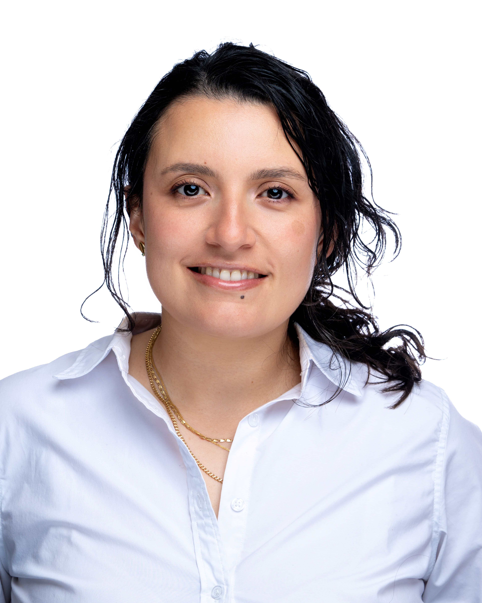

Portfolio — updated 2026
Director of AI Programs, Upstate Caring Partners
Nearly a decade in marketing and program management. Now leading the policy, governance, and operational infrastructure for AI at the largest behavioral healthcare and human-services organization in Central NY.

Since joining Upstate Caring Partners as Director of AI Programs, the work has been organized as a three-part roadmap of strategic objectives. This reflects best practices for responsible AI adoption and hands-on experience launching programs: prove value in small, controlled pilots, put guardrails in place early, then build the foundation to scale.
01 · In progress
Targeted pilots with defined success measures, tested and refined through feedback loops before any wider rollout.
02 · In progress
Clear policy, risk-based review, and cross-functional oversight, so every AI project has an owner and a path to approval.
03 · Up next
Security controls, data foundations, and role-based training in place first, so pilots become repeatable workflows.
Three pilot use cases are currently running. Rather than scale on early signal, a structured evaluation has been set up. This means observing real usage, regularly validating and collecting feedback and defining metrics that indicate value to establish a sound design of experiments.
A chat-based tool for updating and generating agency policy. It surfaces any compliance gaps and cites appropriate guidelines and law.
An agent that reviews service-note quality for every staff member and individual served, flagging notes that fall short of compliance standards.
Flags inconsistencies between incident reports and shift documentation, so gaps get caught before they become a safety risk.
The program- and change-management track record this role was built on. A decade of leadership in CRM, lifecycle, and end-to-end campaign programs for consumer tech companies.
Built a RAG engine as an M.S. capstone, owning the full lifecycle from architecture to deployment, and acted as product owner across interdisciplinary AI research initiatives.
Owned 30+ quarterly campaigns as product owner across merchandising, marketing, and product; drove an 11% lift in clickthrough and a 12% lift in seller activation.
Owned retention-funnel optimization and A/B testing roadmap, increasing conversions by 3% and informing lifecycle strategy across product teams.
Led multilingual email strategy for US and LATAM markets, driving 8% growth in qualified leads through lead-nurture automation.
Integrated CRM with sales ops and introduced agile practices that grew team capacity and email output.